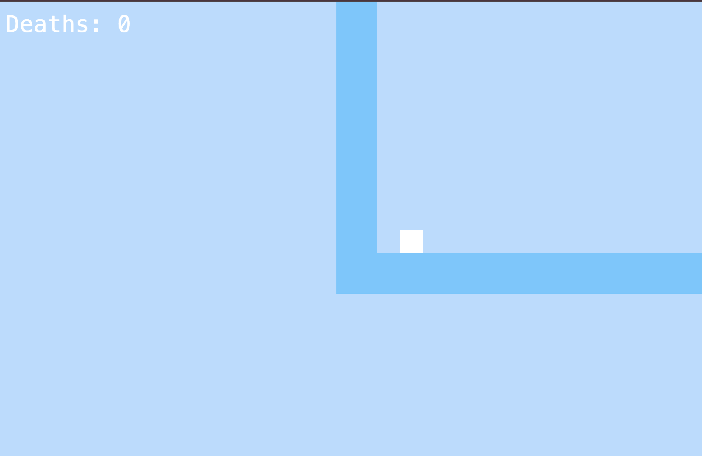

This project was a year long project that I made in 10th grade.
The "Freedom Project" for SEP 11 is a year-long project all about making a website/game that solves a problem the viewer might have.
I chose to make a game relate to AP Chem with my partner, where players practice topics from the 9 units of AP Chem after completing levels. We used kaboom and node.js to help make the game and API needed for the project. The purpose to help students who might find studying as a struggle by making it entertaining and still helping and reinforcing their understanding about AP Chem.
One big challenge my partner and I had was connecting the API, (backend), with kaboom, (the frontend). After completing the level it would just show an error screen instead of the question, this was because we hard coded the link to get the question. When we changed this, this led to another big problem. The game would work localling in our IDE, but wouldn't work on github pages, so we had to get an application to run our backend and not crash our game on github pages. This is how we were able to get everythng to work
A major takeaway is consideration, one of the biggest things about making a game meant to help with study and keep it fun, is to consider what a student needs to learn or help understand better. This whole project is about consideration for others, how it could be fun for students, how they can learn, etc. Another big takeaway is working with a partner is difficult and people need to communicate ahead of time. Even talking with other people outside of SEP, (AP Chem teacher), for help to get questions and other stuff that could help with studying about AP Chem.
For the future projects that I will make, I will try to add everything I've learned from this year long project like stuff with APIs. Not just that, but I will also try and use all the skills, takeaways, and other real world tools I've learned from the past year to help improve projects I will make in the future.

This is a screenshot of how my game looks when you first open it!